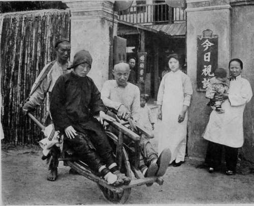

X. Foreign Magic. Part I. 2
Description
This section is from the book "Foreign Magic: Tales of Every-Day China", by Jean Carter Cochran. Also available from Amazon: Foreign Magic: Tales of Every-Day China.
X. Foreign Magic. Part I. 2
In the street the stranger's donkey boy held another audience under his spell by marvellous accounts of the manners and possessions of the foreigners of Feng Ti Fu. The story of the wonders lost nothing in the telling, and as the guest made her final bow of gratitude she heard him say, "Oh, yes, he is a very great doctor, indeed; he makes the blind to see and the lame to walk. And once, they say—it was before my time and I cannot vouch for it myself—he raised a man from the dead."
The Popular Vehicle Holds A Homeward-Bound Patient Rejoicing In The Hospital Magic.
At these astounding words Wang Sao Tze pricked up her ears, and, turning to the lady, asked in an eager whisper, "Is this what he says true? Could he cure me too? I have a terrible pain in my side which grows worse every day. I asked the old quack here to cure it, but he is not worth a string of cash"
"Come to the hospital, Wang Sao Tze; my sister is also a doctor there, and between the two of them I think that they could help you; but if they cannot, they will tell you truly."
This was too sudden a step for Wang Sao Tze, who a short time ago had only been too eager for an opportunity to revile all foreigners. She shook her head. "My husband would never allow it," she said, with a sudden meekness that would have been very laughable to one who knew her well.
As the foreigner waved a farewell to the little group, she said to Wang Sao Tze, "If you ever want a friend, come to me, Wang Sao Tze." Such kindly words had never fal-> len on this woman's ears before, and she repeated them over and over again to herself, saying, "I believe she really meant it; she did not say it to be polite."
For many days thereafter the stranger's visit was the wonder of the village, and in the warm evenings the women would gather about their doors and gossip about this foreigner, who had come to them out of the unknown to be so quickly swallowed up again. Only Wang Sao Tze listened a little apart, thinking of her new friend and pondering pleasant words in her heart.
In the months that followed the harvest was garnered, the autumn crops were sown, and the village life continued the same routine that it had known for the last two thousand years. No transformation could be noticed in Wang Sao Tze; in fact, she daily grew more unbearable, and her husband made it a point to absent himself as much as possible, although one had to go a long distance to get away from the sound of her voice when once she began her revilings. If by chance in one of her rages she started down the street, strong men would quail and as quietly as possible slink out of her path.
No one realised, not even she herself, that the increasing pain which she endured was in part the cause of her ungovernable temper. Frequently she thought of the hospital, but always she dismissed the idea, for who can measure the courage it would take for a woman of her condition, who had never been ten li away from her own village, to trust herself to aliens?
At length one day her husband found her stretched unconscious on the floor. True, she soon regained consciousness, but this attack crystallised her resolution; as soon as she could speak, she turned to her husband and weakly announced, "I am going to the foreign hospital at Feng Ti Fu."
Wang Si Fu fairly gasped with astonishment; of the many surprises his wife had sprung upon him, this was the most startling. "They will cast the evil eye on you and on the whole village," he cried, "and what is more, it is not fitting, and I will never allow it."
That was enough for Wang Sao Tze; she had meant to throw out the suggestion as a feeler, and if her husband had agreed she would have let the matter drop. Such opposition was not to be submitted to for a moment, and she immediately set about preparations for her departure. With an absolutely un-Oriental swiftness she put her household in order. The children were left in the care of her daughter-in-law, for she lived on the same court and could easily manage both homes.
On the following morning Wang Sao Tze mounted their donkey; her bundle of clothes was placed behind her back, and she intimated to her husband, who was to lead the steed, that she was ready to depart. A few firecrackers —they were very few—were set off to propitiate the evil spirits and to ensure a prosperous journey and a safe return. The donkey did not like the noise and started at such a brisk trot that Wang Si Fu had difficulty in keeping up with him, and this cut off all possibility of conversation, which under the circumstances was just as well.
They had made a very early start, and the sun had not yet arisen when they were well on their road; by ten of the clock the walls of Feng Ti Fu came in sight, and at half after ten exactly, they drew up at the gate of the hospital. Wang Sao Tze was absolutely unmoved as far as her outward expression went, but Wang Si Fu was fairly green with fear; he breathed very hard and his hand shook as he knocked on the gate at his wife's bidding. For now were they not about to enter the lion's den indeed, and who knew how soon their bones would be ground into fine white powder ?
A bowing gatekeeper threw the door back and, after directing Wang Si Fu as to where he might take the donkey, he pointed up the long stone steps that led to the woman's entrance. Wang Sao Tze wearily followed his directions. As she toiled up the steps she saw coming out of the hospital a familiar form, and recognised the face of the foreign lady whom she had seen so many months before.
"Oh, Miss Waring, I've come, I've come!" she called. For a moment the foreigner hesitated; who was this woman who evidently thought that her whole happiness was bound up in the fact that she had come to the hospital? Then she recognised Wang Sao Tze's forceful features, and going eagerly forward, she joyfully cried, "I am glad that you wanted a friend, Wang Sao Tze, and came to find me." From that moment she captured Wang Sao Tze's heart, and banished her fear entirely.
Continue to: